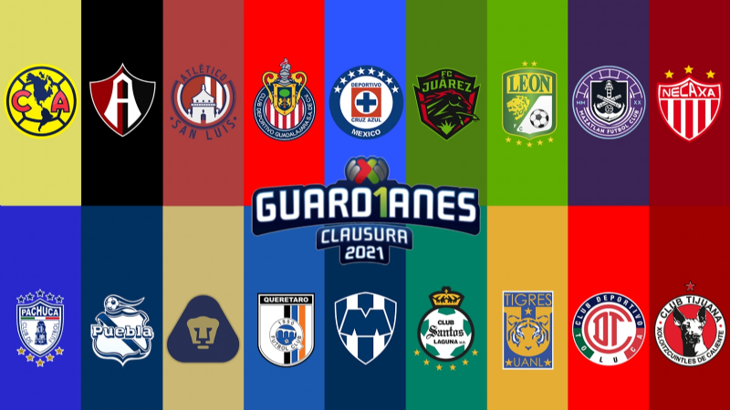

¿Cómo funciona nuestra liga?
La Liga MX, conocida como la Primera División antes de la temporada 2012-13, es el nivel más alto del fútbol mexicano y consta de 18 clubes. Cada año calendario se divide en dos torneos cortos, la Apertura y el Clausura. En cada torneo corto un club juega una vez contra los otros 17 clubes. El equipo local cambia, dependiendo del torneo corto actual.
Un nuevo campeón es coronado por cada torneo corto a través de un sistema de desempate que consiste en ocho equipos. Los ocho mejores clubes se clasifican para los playoffs. Los clubes juegan en un empate a dos partidos, uno de ellos en el campo de cada club, y el que tenga la mejor puntuación total avanza. Si los dos clubes están empatados después de ambos partidos en los cuartos de final y semifinales, el mejor cabeza de serie avanza automáticamente. En las finales, si los dos clubes están empatados después de ambos partidos se añaden dos mitades de 15 minutos de tiempo extra. Si los clubes siguen empatados después de la prórroga, el campeón se determina por los tiros desde el punto penal.
Un club es relegado a Ascenso MX cada año (dos torneos cortos). Para determinar el club que va a descender, se mantiene la proporción de puntos por partido para cada equipo. El club que tenga la peor proporción de puntos por partido en los tres años anteriores (seis torneos cortos) es relegado a Ascenso MX.